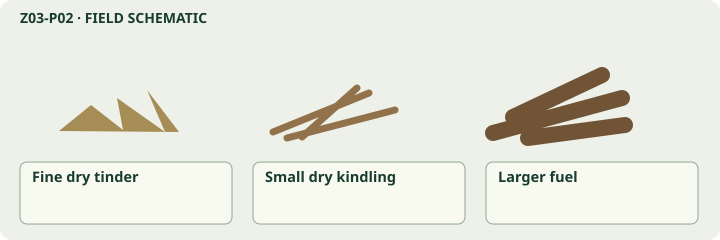

Z03-P02 · Fire and ignition
Select dry tinder and kindling
Recognize the difference between material that catches and material that carries a small fire.
When it applies · An authorized and controllable outdoor campfire site. For lawful collection, follow site rules.
Equipment · Dry tinder, dry small kindling, larger dry fuel and extinguishing water.

Actions
- Prepare dry tinder and separate it from wet, moldy or frozen surface material. Keep the prepared materials dry while staging.[C03, ED]
- Stage dry small kindling and then larger pieces. Dry tinder starts the flame; progressively larger material carries it after the smaller material burns.[C03]
- Check the fire site again before ignition. Keep accelerants away and stay with the fire until it is out.[C02, C03, C04]
Verify · Tinder, kindling and fuel are distinguished, dry and ready before a match is struck.[C03, ED]
Stop or change course · If you lack dry materials or the site cannot be controlled, change to the no-fire plan.[C03, C08, ED]
Evidence and editorial notes
- C02 · USDA Forest Service / Smokey Bear · Smokey Bear’s Campfire Safety Guide
- Build your campfire; choose a location · Where campfires are currently permitted
Use an established fire ring where required or available. Protect the area from nearby combustible materials, avoid windy conditions and keep water ready.
Primary source · checked 2026-11-24 - C03 · USDA Forest Service / Smokey Bear · Smokey Bear’s Campfire Safety Guide
- Build your campfire > Tinder, kindling, fuel · Outdoor authorized campfire
Dry tinder, small kindling and larger fuel serve different roles. Gather materials before ignition. Avoid accelerants.
Primary source · checked 2026-11-24 - C04 · USDA Forest Service / Smokey Bear · Smokey Bear’s Campfire Safety Guide
- Maintain and extinguish a campfire · Occupied campfire, water and tools available
Stay with the fire. Drown, stir and add water again until cool. Leaving visible embers or merely covering them is unsafe.
Primary source · checked 2026-11-24 - C08 · NWS · What To Do If You're Caught in a Winter Storm
- Outside > If there is no shelter nearby · Stranded outdoors during a winter storm
Seek shelter and block wind and wet exposure. Reduce heat loss from contact with snow or ground.
Primary source · checked 2026-11-24
Source lineage · B012-P20.